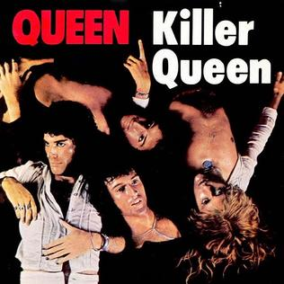

Killer Queen é um Stand humanoide visivelmente um felino musculoso quase tão alto quanto o próprio Kira de cor geral clara. Tanto no mangá quanto no anime, ele é retratado como rosa claro, enquanto no videogame All Star Battle, é retratado como branco.
Os poderes de Killer Queen giram em torno da criação de diferentes tipos de bombas que podem aniquilar os inimigos de Kira de uma só vez, tornando-o um Stand muito perigoso para enfrentar. As bombas não são apenas poderosas, mas Kira também é capaz de implantar inicialmente duas e, eventualmente, três tipos de bombas com potências diferentes, dando ao serial killer uma grande variedade de opções ao lidar com seus inimigos.
O Stand de Kira "Killer Queen" é uma referência a música de Queen, Killer Queen. A segunda bomba de Killer Queen, Sheer Heart Attack, é uma referência a música ou álbum de Queen, Sheer Heart Attack.
